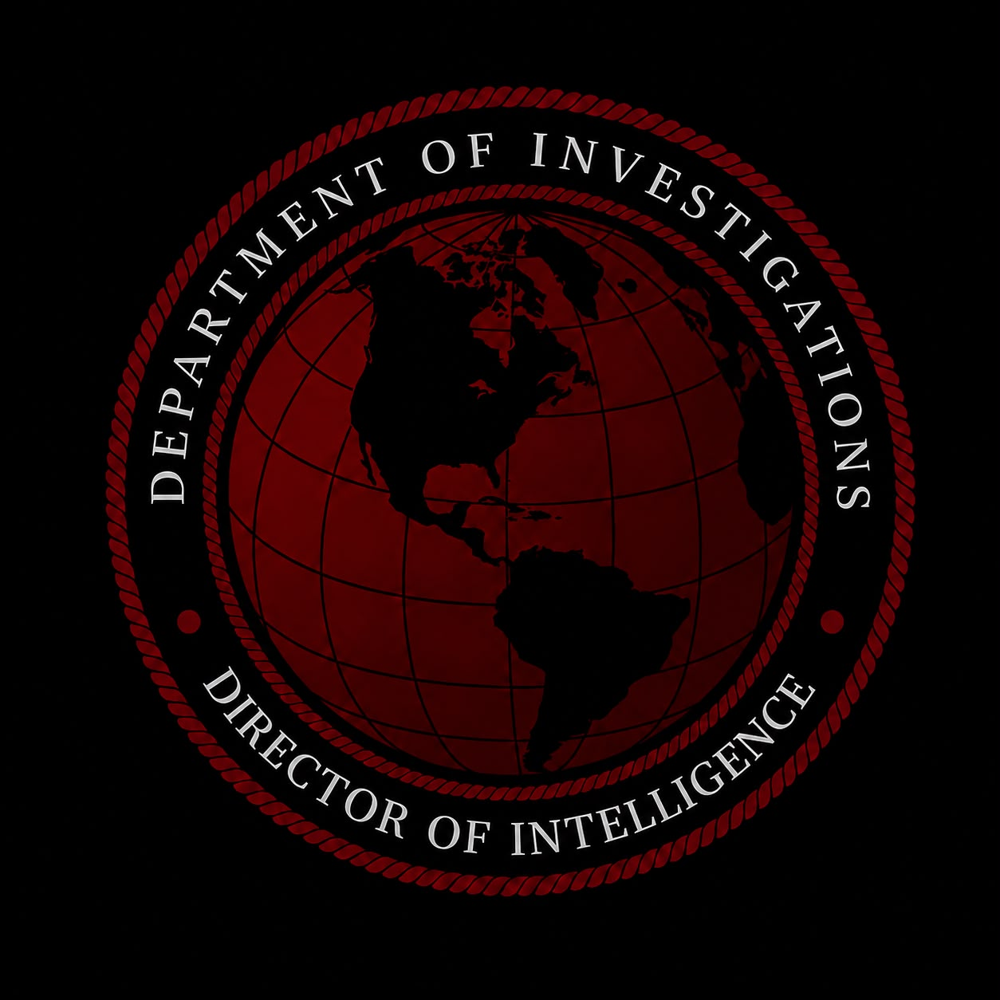

Ministry of Foreign Affairs bünyesinde faaliyet gösteren Department of Intelligence, uluslararası gelişmelerin takibi, stratejik değerlendirmelerin hazırlanması, kurumsal bilgi akışının düzenlenmesi ve dış politika süreçlerine bilgi temelli katkı sağlanması amacıyla yapılandırılmış bir daire olarak tanımlanmaktadır.
Department of Intelligence; uluslararası ilişkiler, diplomatik gelişmeler, bölgesel dinamikler, güvenlik meseleleri ve stratejik analiz alanlarında sistematik bir çalışma anlayışını benimser. Kurumun temel yaklaşımı, doğru bilginin doğru zamanda değerlendirilmesi ve elde edilen sonuçların kurumsal karar alma süreçlerine katkı sunmasıdır.
Daire, faaliyetlerini gizlilik, tarafsızlık, sorumluluk, disiplin ve hukuka bağlılık ilkeleri doğrultusunda yürütmeyi esas alır. Kurumsal güvenilirliğin korunması, bilgilerin doğruluğunun değerlendirilmesi ve görev sınırlarının açık biçimde belirlenmesi, çalışma anlayışının temel unsurları arasında yer alır.
Department of Intelligence'ın misyonu; uluslararası gelişmeleri yakından takip etmek, güvenilir bilgi kaynaklarından elde edilen verileri değerlendirmek, stratejik analizler oluşturmak ve dış politika alanındaki karar alma süreçlerine nitelikli bilgi desteği sağlamaktır.
Bu doğrultuda dairemiz; gelişmeleri yalnızca mevcut durum üzerinden değil, muhtemel sonuçları ve uzun vadeli etkileri açısından da değerlendirmeyi amaçlar. Bilginin doğruluğunu, kaynağın güvenilirliğini ve analizlerin tutarlılığını esas alarak kurumsal kapasitenin güçlendirilmesine katkıda bulunur.
Misyonumuzun merkezinde; ülke menfaatlerinin korunmasına katkı sağlamak, diplomatik farkındalığı artırmak, uluslararası riskleri değerlendirmek ve kurumlar arası koordinasyonu geliştirmek bulunmaktadır.
Vizyonumuz; bilimsel analiz yöntemlerini, çağdaş teknolojileri ve nitelikli insan kaynağını etkin biçimde kullanan, güvenilirliği ve kurumsal disipliniyle öne çıkan, uluslararası gelişmeleri çok yönlü değerlendirebilen bir istihbarat ve stratejik analiz yapılanması oluşturmaktır.
Department of Intelligence, değişen uluslararası koşullara uyum sağlayabilen, gelişmeleri öngörü perspektifiyle ele alan ve kurumsal bilgi üretiminde yüksek standartları benimseyen bir yapıya ulaşmayı hedefler.
Uzun vadeli hedefimiz; analitik düşünme kültürünü geliştirmek, bilgi güvenliği bilincini güçlendirmek, kurumsal hafızayı korumak ve karar süreçlerine sağlanan katkının niteliğini sürekli yükseltmektir.
Department of Intelligence'ın teşkilat yapısı, kurumsal ihtiyaçlar ve belirlenmiş yönetim esasları doğrultusunda oluşturulur. Her birimin sorumluluk alanı, görev tanımı ve raporlama düzeni açık biçimde belirlenir.
Yönetim kademesi; stratejik hedeflerin belirlenmesi, iş dağılımının yapılması, çalışmaların koordinasyonu ve hazırlanan raporların değerlendirilmesinden sorumludur.
Department of Intelligence bünyesinde görev alacak personelde; sorumluluk bilinci, analitik düşünme yeteneği, güvenilirlik, disiplin, ekip çalışmasına yatkınlık ve gizlilik kurallarına riayet etme anlayışı aranır.
Bilgi güvenliği, Department of Intelligence'ın kurumsal güvenilirliğinin temel unsurlarından biridir. Görev kapsamında edinilen bilgi ve belgeler, belirlenen erişim yetkileri ve saklama kuralları doğrultusunda korunur.
Uluslararası ilişkiler, farklı siyasi, ekonomik ve toplumsal dinamiklerin bir arada değerlendirilmesini gerektirir. Department of Intelligence, bu dinamiklerin anlaşılmasına yönelik analizleri destekleyerek diplomatik farkındalığın geliştirilmesine katkı sağlamayı amaçlar.
Department of Intelligence bünyesinde görev yapan herkes, görevini kurumun etik ilkelerine uygun biçimde yerine getirmekle sorumludur.
Department of Intelligence'ın kurumsal kültürü; disiplin, güven, sorumluluk, liyakat ve ortak hedefler etrafında şekillenir.
Department of Intelligence, bilgiye dayalı değerlendirme, stratejik farkındalık ve kurumsal sorumluluk ilkeleri doğrultusunda faaliyet göstermeyi hedefleyen bir yapılanmadır.
"Bilgiyle değerlendirir, sorumlulukla hareket eder, ilkelerimizden ödün vermeyiz."